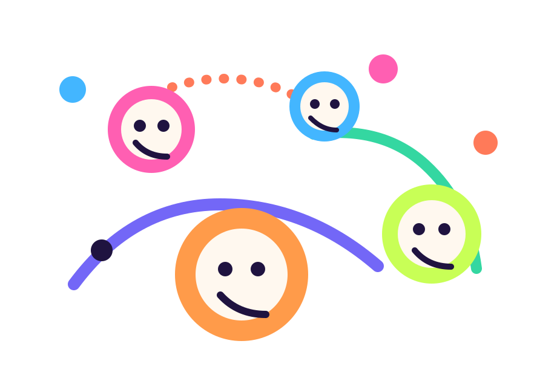
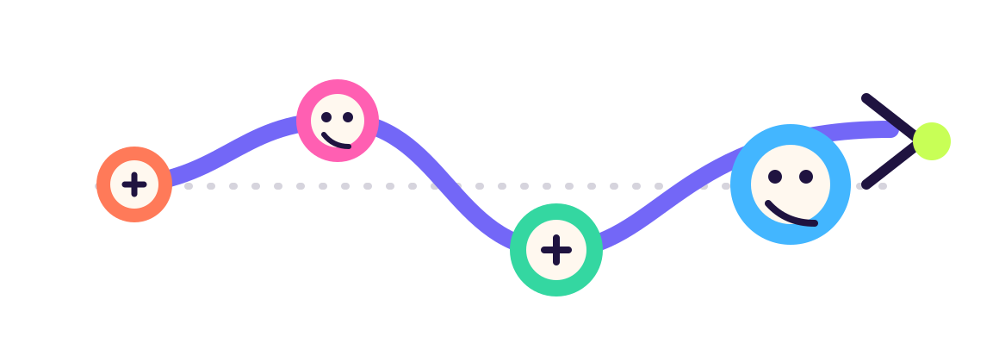

01
先开第一轮，再赢下一轮
团队不必一开始就定义终局，先启动，先验证，再让阶段证明打开下一轮。
Stage-led
AI teams deserve louder capital
AI 放大小团队与超级个体的生产力，oneworld 把这股生产力接入资金、社区与 Plato 现货市场。
Why now
过去的融资系统偏爱大组织、长流程和旧叙事。现在，AI 让 3 个人做出过去 30 人团队的产出， oneworld 要做的，是让这些团队也能更早拿到资金支持。
我们不是替项目包装故事，而是让真实增长更快被市场看到，再自然流向 Plato 现货交易。

Core beats
01
团队不必一开始就定义终局，先启动，先验证，再让阶段证明打开下一轮。
02
不提前秀未来轮次，不透支预期，只让社区看到已经发生的融资状态。
03
完成 ICO 后，oneworld 不把项目困在站内，而是把流动性承接给 Plato Spot DEX。
Flow

先配置首轮，快速开跑。
交付阶段证明，继续放大。
增长、估值与社区一起抬升。
完成最终融资，准备进入交易。
进入现货 Orderbook 市场。
Built for both sides
For creators
For backers